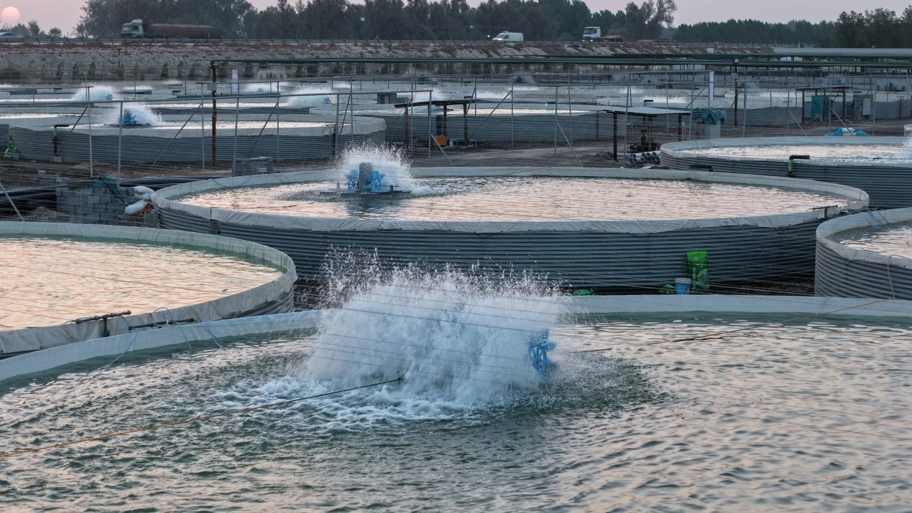
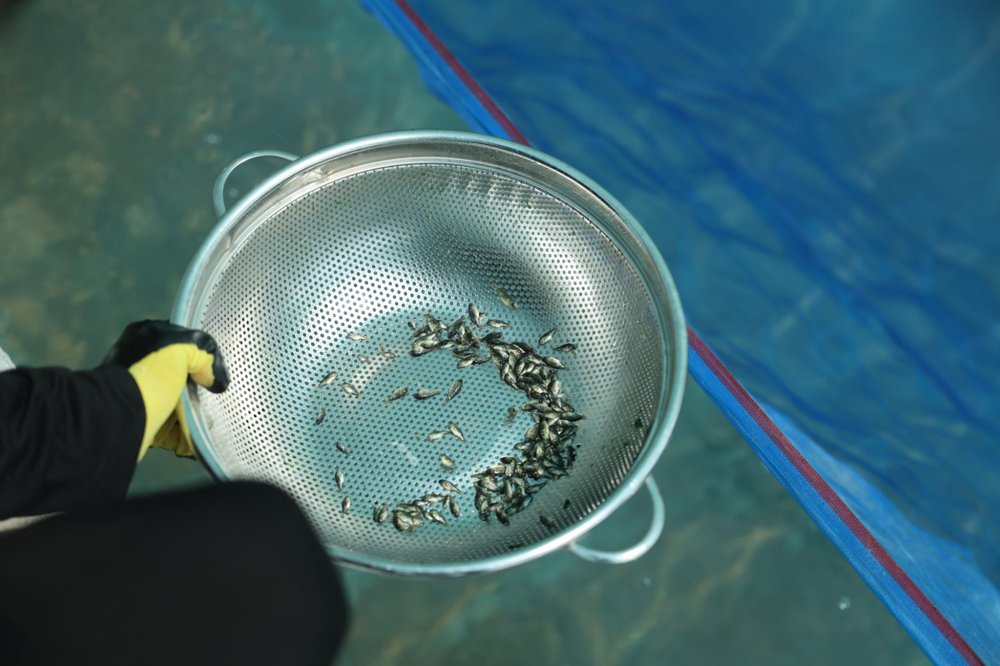
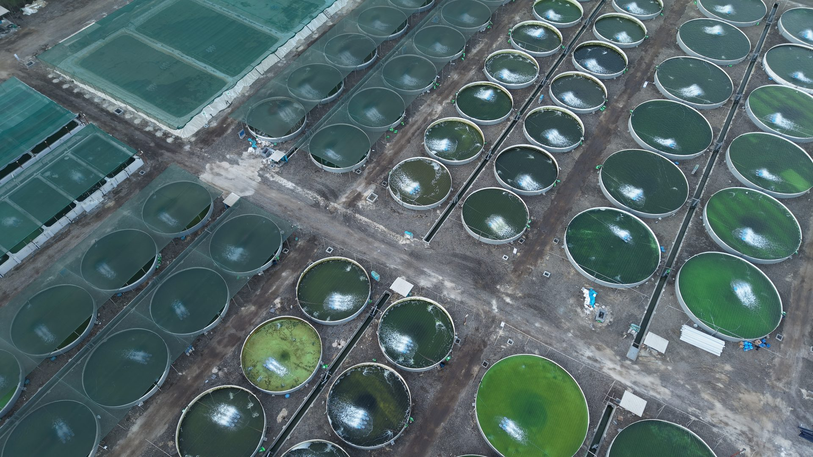
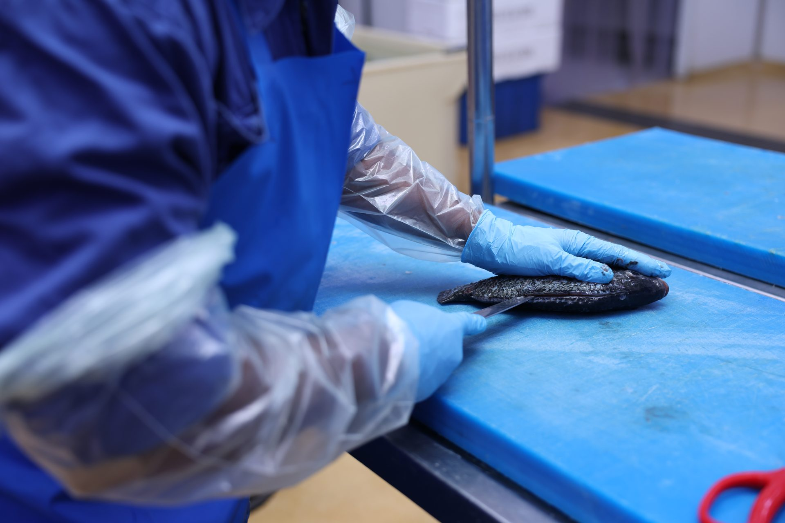
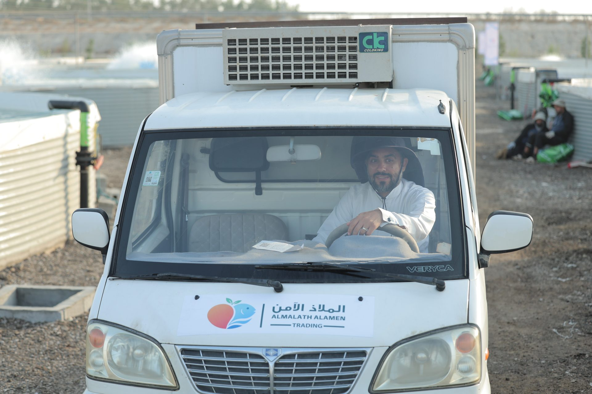

كل سمكة بلطي (Tilapia) تصل لمائدتك مرّت برحلة دقيقة من ست مراحل، نحرص فيها على أعلى معايير الجودة والرعاية.
تبدأ رحلة كل سمكة باختيار دقيق لأصبعيات بلطي (Tilapia) سليمة وقوية من مصادر موثوقة، لضمان معدل نمو صحي ومقاومة جيدة منذ اليوم الأول.

تنمو الأسماك في أحواض استزراع صناعية مُجهّزة (وليست أقفاصًا عائمة أو بيئة بحرية مفتوحة)، بمياه نظيفة ومتابعة مستمرة، وتغذية متوازنة مصممة خصيصًا لدعم النمو الصحي بأعلاف محلية سعودية 100%.

فريقنا الفني يراقب درجة حرارة المياه، نسبة الأكسجين، ومستويات النقاء بشكل يومي، لكي نضمن بيئة مثالية للأسماك طوال فترة نموها.

عند وصول الأسماك للحجم والوزن المثالي، يتم حصادها بعناية من أحواض الاستزراع ونقلها فورًا للتبريد، للحفاظ على طزاجتها الكاملة.

بعد الفرز حسب الحجم، تُنقل الدفعة إلى موقع منفصل مخصص للتنظيف والتجهيز والتغليف، حيث تُجهَّز بلطي (Tilapia) مبرّدة (كامل غير منظف، أو منظف ومغلف للقلي، أو دفتر للشوي) حسب طلب العميل، وفق معايير سلامة غذائية صارمة.

بأقل عدد ممكن من الوسطاء، يصل البلطي (Tilapia) من مزارعنا مباشرة للموزعين والأسواق ومطبخك، محافظًا على طزاجته وجودته العالية.
